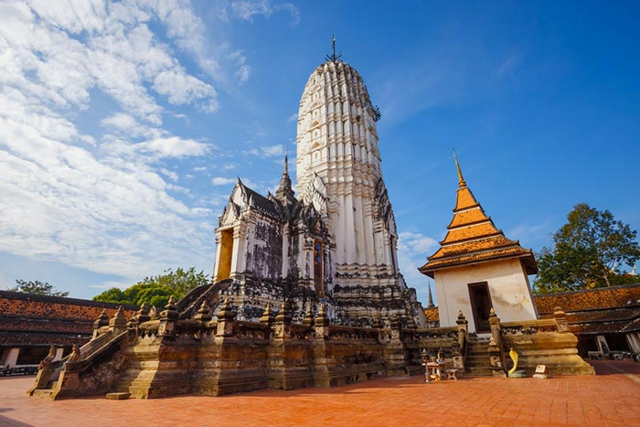
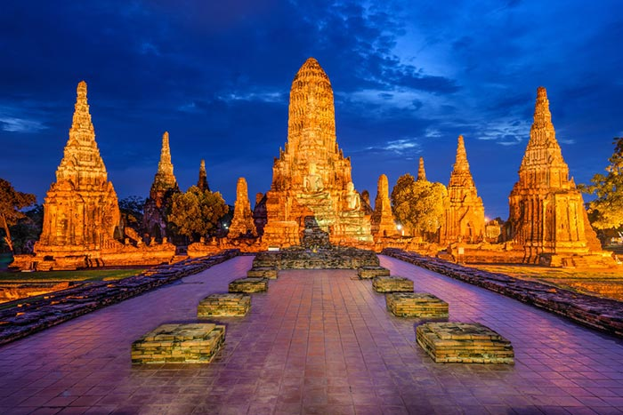

| สถานที่แนะนำ 3 อันดับ | |
| 1 | วัดพนัญเชิงวรวิหาร |
| 2 | วัดพุทไธศวรรย์ |
| 3 | วัดไชยวัฒนาราม |
.jpg)
2. วัดพุทไธศวรรย์

- ตั้งอยู่ในเขตตำบลสำเภาล่ม อำเภอพระนครศรีอยุธยา หนึ่งในวัดที่ได้รับความนิยมจากนักท่องเที่ยว ภายในเป็นที่ประดิษฐาน "หลวงพ่อดำ" พระประธานในประอุโบสถ งดงามด้วยศิลปะแบบอู่ทอง เป็นที่เล่าขานในเรื่องความศักดิ์สิทธิ์ ในการดลบันดาลให้หายจากการเจ็บป่วย หรือใครที่อยากมีบุตรก็สามารถขอได้สมความปรารถนา นอกจากนี้ยังมี "องค์ปรางค์ประธาน" ภายในประดิษฐานพระเจดีย์องค์เล็ก ๆ และรอยพระพุทธบาท ให้กราบสักการะ, "ตำหนักสมเด็จพระพุทธโฆษาจารย์" เชื่อกันว่าเป็นที่ประทับของพระพุทธโฆษาจารย์ พระเถระชั้นผู้ใหญ่ผู้เป็นอาจารย์ของสมเด็จพระเพทราชา รวมถึงยังมี "วิหารองค์พ่อจตุคามรามเทพ" ที่มีผู้คนเดินทางมากราบไหว้บูชาอย่างต่อเนื่อง
3. วัดไชยวัฒนาราม

- ตั้งอยู่ที่ตำบลบ้านป้อม อำเภอพระนครศรีอยุธยา เป็นวัดที่สมเด็จพระเจ้าปราสาททอง โปรดสร้างขึ้นเมื่อปี พ.ศ. 2173 เดิมพื้นที่วัดไชยวัฒนาราม เป็นที่อยู่ที่สุดท้ายก่อนสิ้นพระชนม์ของพระราชมารดาของสมเด็จพระเจ้าปราสาททองในช่วงที่ยังไม่เสวยราชสมบัติ เมื่อพระองค์ได้ขึ้นครองราชย์แล้ว จึงได้โปรดให้สร้างวัดไชยวัฒนารามนี้ขึ้นเพื่ออุทิศผลบุญให้แก่พระราชมารดา สิ่งที่น่าสนใจภายในวัด ได้แก่ "พระปรางค์ศรีรัตนมหาธาตุ" เป็นปรางค์ประธานของวัด, "พระระเบียง" ภายในพระระเบียงมีพระพุทธรูปปูนปั้นปางมารวิชัย และ "พระอุโบสถ" ภายในมีซากพระประธาน เป็นพระพุทธรูปปางมารวิชัยสร้างด้วยหินทราย เป็นต้น